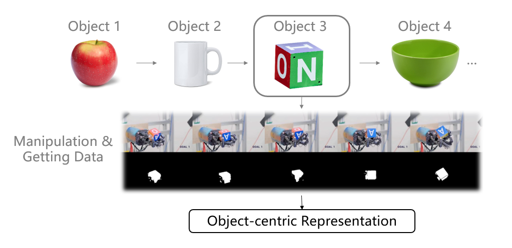

Stanford University, Tsinghua University
We propose a framework to continuously learn object-centric representations for visual learning and understanding. Existing object-centric representations either rely on supervisions that individualize objects in the scene, or perform unsupervised disentanglement that can hardly deal with complex scenes in the real world. To mitigate the annotation burden and relax the constraints on the statistical complexity of the data, our method leverages interactions to effectively sample diverse variations of an object and the corresponding training signals while learning the object-centric representations. Throughout learning, objects are streamed one by one in random order with unknown identities, and are associated with latent codes that can synthesize discriminative weights for each object through a convolutional hypernetwork. Moreover, re-identification of learned objects and forgetting prevention are employed to make the learning process efficient and robust. We perform an extensive study of the key features of the proposed framework and analyze the characteristics of the learned representations. Furthermore, we demonstrate the capability of the proposed framework in learning representations that can improve label efficiency in downstream tasks. Our code and trained models are made publicly available at: https://github.com/pptrick/Object-Pursuit.

Fig 1. Agent discovers and learns objects sequentially
Fig 2. Object space as discriminative weights.
Fig 3. Object Pursuit: learning objects representation continuously.
Fig 4. Visualization results of one-shot learning on DAVIS dataset.
@inproceedings{pan2021object,
title={Object Pursuit: Building a Space of Objects via Discriminative Weight Generation},
author={Pan, Chuanyu and Yang, Yanchao and Mo, Kaichun and Duan, Yueqi and Guibas, Leonidas},
booktitle={International Conference on Learning Representations},
year={2022}
}